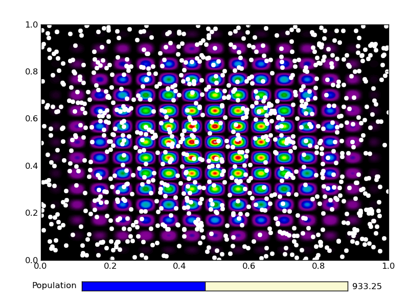
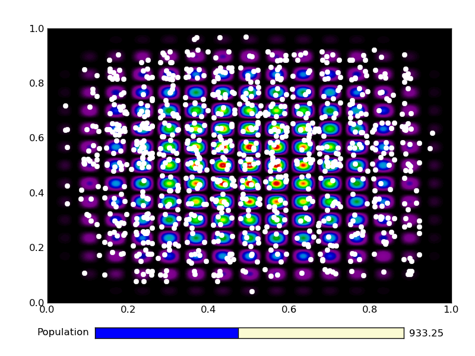
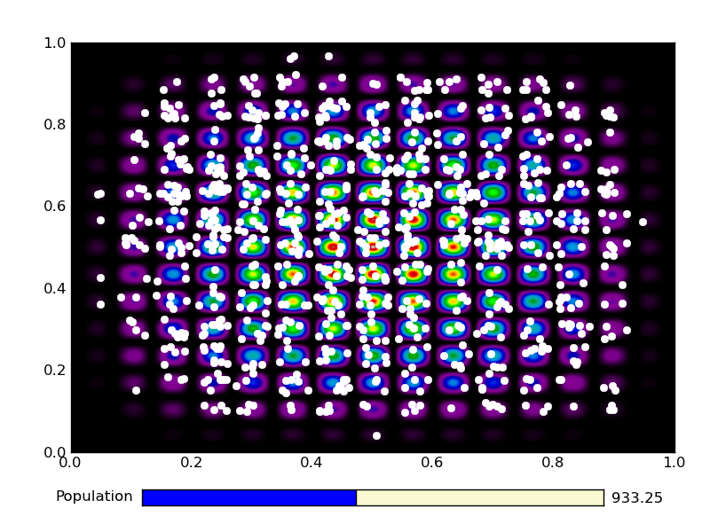
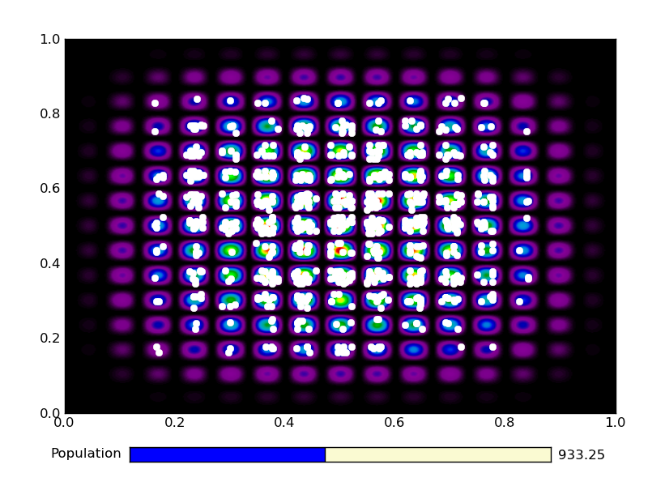
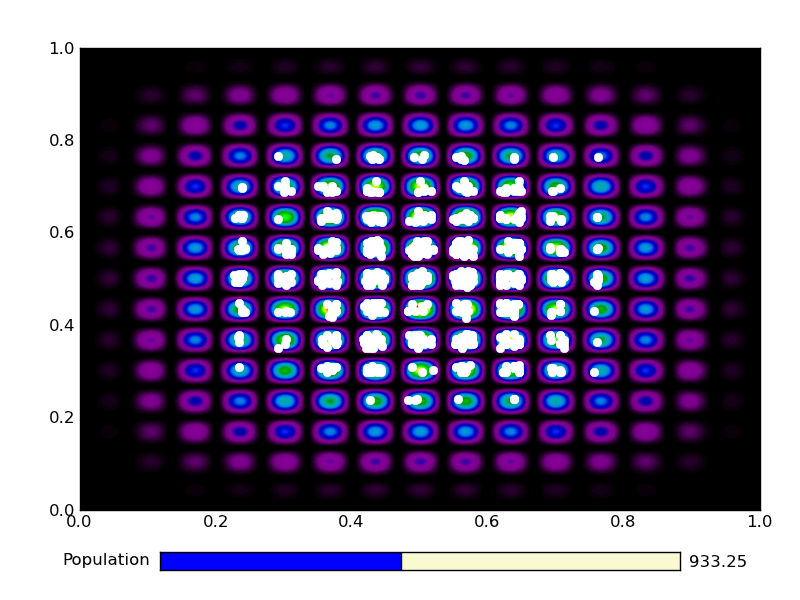
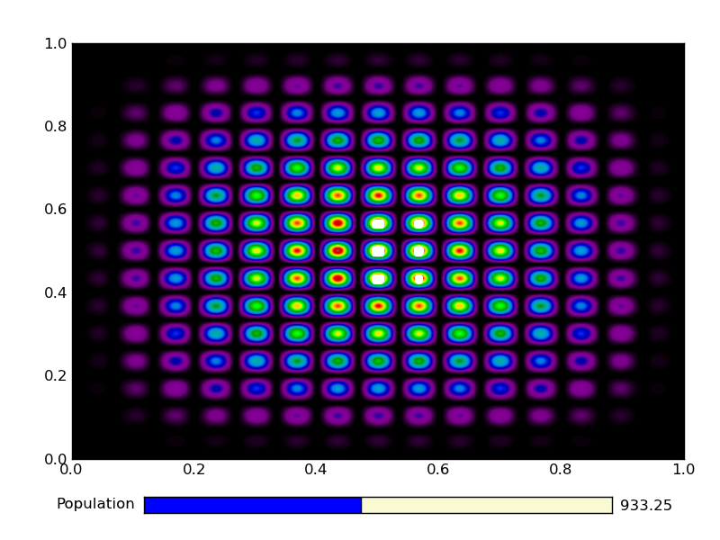
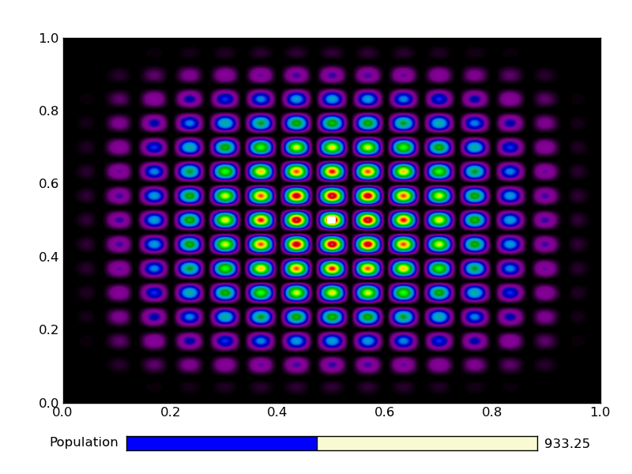

{kind=link}
{kind=link}
{kind=link}
{kind=link}
{kind=link}
{kind=link}
{kind=link}
{kind=link}
{kind=link}
{kind=link}
{kind=link}
{kind=link}

In this tutorial we write a code that implements a simple genetic algorithm to find a maximum of a function, and construct a graphical user interface around it to visualise the program. We will use about as many lines of codes as there letters in the title of this tutorial. Granted, for clarity, some single-line statement should be expanded in multi-line statements, though I personally feel the code is not particularly obfuscated.
Contents
Typically, a genetic algorithm has the following ingredients, introducing some terminology along the way:
- A function that needs to be maximized
- A function that returns the fitness of a set of parameters (individual from a population)
- A function that generates a new individual starting from other individuals (child from parents via a breeding mechanism)
4. A function that selects fit individuals (i.e. individuals with a high fitness) for breeding
First, as always, the necessary import statements:
import pylab as plt
import numpy as np
Let’s introduce the fitness function that needs so be maximized. We choose 2D function with a lot of local maxima:
def maxfunc(sample):
x,y = sample
return (16.*x * (1-x) * y * (1-y) * np.sin(15.*np.pi*x) * np.sin(15.*np.pi*y))**2
Suppose we have a population consisting of a lot of individuals, and we have a fitness value for all of them. We might want to rank the individuals according to their fitness. The function returns the sorted sample and the cumulative fitness. Using the latter, we can later on choose to keep a fraction of a given population for further breeding:
def rank(sample,fitness):
fitness /= np.sum(fitness) # normalize fitness values
sa = np.argsort(fitness) # sort the sample
return sample[sa],np.cumsum(fitness[sa])
The ‘good’ individuals are chosen to be a random fraction (but at the most 10%) of the original population. Of course if we choose e.g. 10% of the population, we will choose the 10% fittest individuals:
def select_individuals(acfitness,min_value=0.9):
return (acfitness>min(np.random.uniform(),min_value))
Next up, is a breeding function. We use a random point crossover mechanism (i.e., if there are n parameters, we choose the first n1 parameters of parent 1 and the last n-n1 parameters of parent2 to generate a new individual. This is a bit overkill in 2D, since n1=1 always:
def breed_crossover(parent1,parent2,parents):
index = int(np.random.uniform(low=1,high=len(parent1)-1)) # random point between 1 and 1 is always 1
return np.hstack([parent1[:index],parent2[index:]])
Given a population, we know now which individuals are good enough to be parents, and we know how to breed having parents. Thus, we can generate some offspring. In doing so, we add another random event: we randomly choose parents from the population to breed with (determined with index1 and index2 below):
def generate_offspring(sample,good_individuals,breed_func):
parents = sample[good_individuals] # select only good individuals
nr_of_children = np.sum(-good_individuals) # how many individuals need to be replaced?
Np,Ni = parents.shape
children = np.zeros((nr_of_children,Ni)) # prepare to fill in the children
index1 = np.array(np.random.uniform(size=nr_of_children,high=Np-1).round(),int) # random parent 1
index2 = np.array(np.random.uniform(size=nr_of_children,high=Np-1).round(),int) # random parent 2
for nr,(i,j) in enumerate(zip(index1,index2)):
children[nr] = breed_func(parents[i],parents[j],parents)
return children
A function that accepts an ‘old’ population and evolves it to a ‘new’ generation is then straightforwardly implemented with:
def evolve(sample,eval_func,breed_func):
fitness = eval_func(sample.T) # evaulation function needs 2xN instead of Nx2
sample,fitness_ = rank(sample,copy.copy(fitness))
good,bad = select_individuals(sample,fitness_)
children = generate_offspring(sample,good,breed_func)
sample[bad] = children
return sample
That’s it, using 31 lines of code. We could know generate an initial population and let it evolve by iteratively calling evolve on the population.
We have about 20 lines of code left to construct an interactive GUI.
Luckily, matplotlib already has a GUI. By just calling plt.show(), a main window is created and an event loop is started. All we need to do is add some functionality. This is the list of features we will implement in the GUI:
- the user should be able to change the number of individuals in the population via a Slider widget.
- the user should be able initialise the sample with the keyboard button i.
- the user should be able to evolve the populations hitting enter.
Each time the user hits i, the function that needs to be maximized has to be shown to the screen, as well as the initial population. Hitting enter should remove the old population, evolve it and show the new population.
Let’s start with the keyboard events. We construct a function called ontype, which receives a keyboard event from the GUI. This event has an attribute key, which is a string corresponding to the button the user just pressed. If key equals i or enter, we need to do something. Otherwise, the function should exit quitely.
def ontype(event):
if event.key=='enter':
#-- retrieve the sample data from the plot: the sample is plotted in white
for child in plt.gca().get_children():
if hasattr(child,'get_color') and child.get_color()=='1':
sample = np.array(child.get_data()).T # put it in the right format
break # make sure `child` is now set to the right artist
sample,fitness = evolve(sample,maxfunc,breed_crossover)
child.set_data(sample[:,0],sample[:,1])
if event.key=='i':
sample = np.random.uniform(size=(slider.val,2),low=0,high=1) # initialize sample
bkg = maxfunc(np.mgrid[0:1:500j,0:1:500j]) # make the background
plt.cla()
plt.plot(sample[:,0],sample[:,1],'o',color='1',mec='1')
plt.imshow(bkg,extent=[0,1,0,1],aspect='auto',cmap=plt.cm.spectral)
plt.gca().set_autoscale_on(False)
plt.draw()
Notice how the function uses the object-oriented interface to matplotlib. Using get_children() on the current axis (plt.gca()), allows to cycle through all the elements that are in the plot. We look for a particular element that has a white color. Because not all elements in a plot have colors, we need to check if the particular element has an attribute called color first. Since there are only very few elements in the plot in this example, we can safely assume that whatever is white, is representing the population. We retrieve the coordinates of the individuals with get_data(), which returns the x and y coordinate arrays. Having what we want, we break the loop. After evolving, we update the values of the plot element representing the new population with set_data.
Initialisation is a bit simpler: we only generate a random set of parameters in the right domain and make the background function. The value for the number of parameters is taken from the slider widget, which we construct later on. For plotting, we first make sure the axes is cleared (cla()), then plot the sample as white dots and add the background. We set autoscale to False so that the axis limits stay the same regardless of what we plot (if one of the individuals lies on the edges, there might be an automatic rescaling otherwise).
Finally, we need to force a draw statement. When something is added to the canvas, it is not automatically rendered. Rendering is an expensive operation, so matplotlib chooses to only render stuff when explicitly needed.
This took about 16 lines of code. We can only use about 5 more to make the slide widget and build the GUI.
if __name__ == "__main__":
axpop = plt.axes([0.20, 0.05, 0.65, 0.03], axisbg='lightgoldenrodyellow') # axis for the slide
slider = plt.Slider(axpop, 'Population', 10, 2000, valinit=500) # the slider
ax1 = plt.axes([0.1,0.15,0.85,0.77]) # main axis to plot the results
plt.gcf().canvas.mpl_connect('key_press_event',ontype) # connect the ontype function to the GUI
plt.show() # show the window
Here, we made a new Slider axes and initiated the main axes used to plot all the results to. Then, we connected the ontype function to the current figure (plt.gcf()) and showed the main window to the screen.
The first line in statement (if __name__=="__main__") makes sure that this part of the code is only executed when run in the terminal with:
$:> python ga.py
We wrote quite some functions that we might want to use in other scripts as well. Then we could simply do an import ga, in which case all the code that comes after if __name__=="__main__" will not be executed.
That’s still 2 lines to spare!
This is the output from an example run:
|  |  |
|  |  |
|  | |
|  | |
|  |